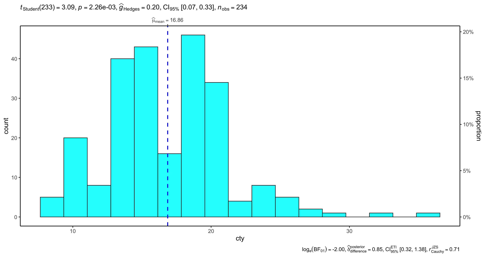
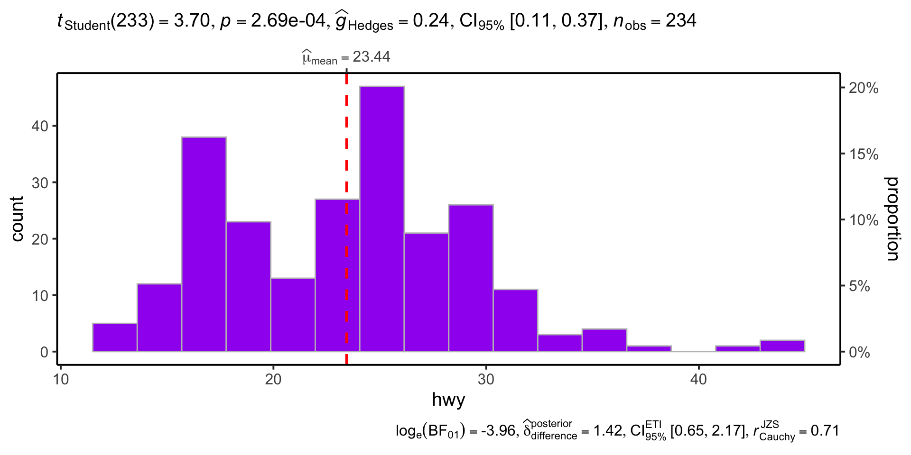
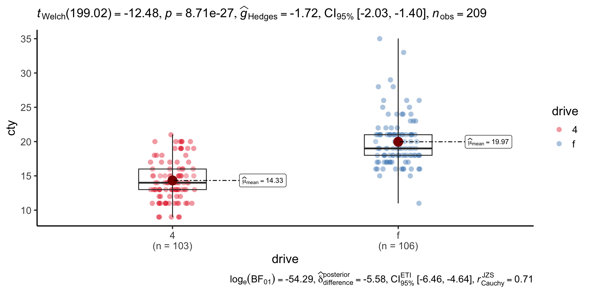
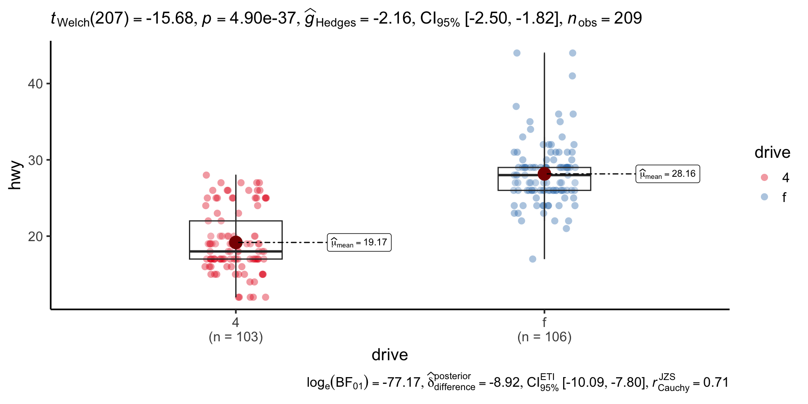
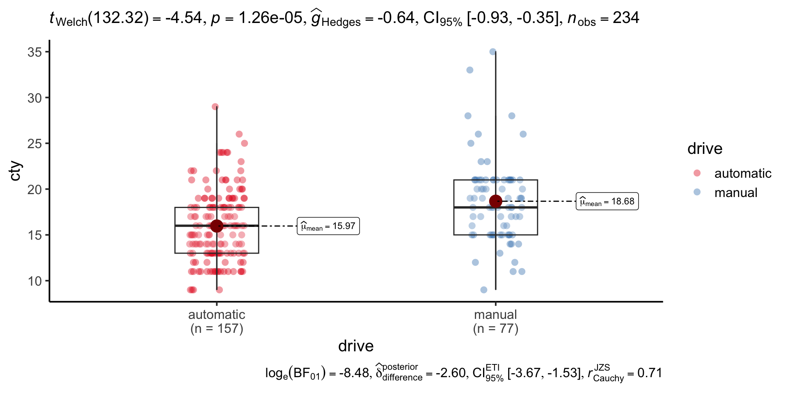
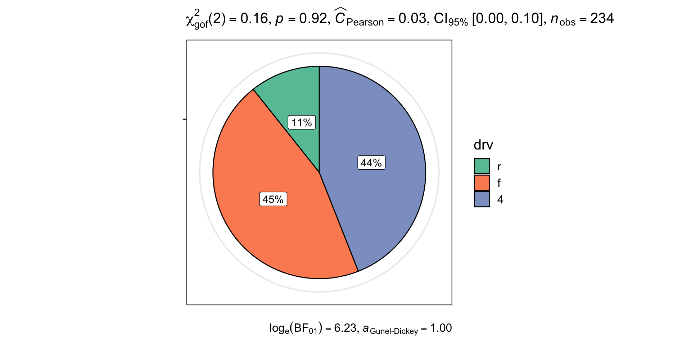
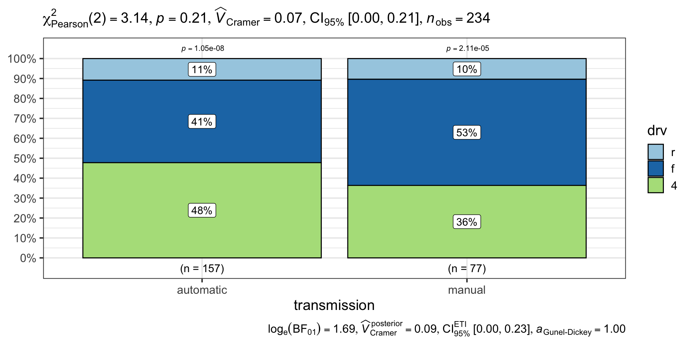

1 数据和变量
数据来源：mpg {ggplot2}
样本容量：234
cty: city miles per gallon
hwy: highway miles per gallon
trans: type of transmission
drv: the type of drive train,
f = front-wheel drive,
r = rear wheel drive,
4 = 4wd
加载包和调用数据
library(tidyverse)
library(ggstatsplot)
data(mpg)
2.1 cty均值的检验
gghistostats(mpg, cty,
test.value = 16,
bin.args = list(color = "black",
fill = "cyan")) +
theme_classic(base_size = 15)

2.1 cty均值的检验
\(H_0: \mu \leq 16\)
\(H_1: \mu > 16\)
拒绝原假设\(H_0: \mu \leq 16\) 。
在城市, 油耗均值大于16英里/加仑。
2.2 hwy均值的检验
gghistostats(mpg, hwy,
test.value = 22,
bin.args = list(color = "grey",
fill = "purple"),
centrality.line.args = list(color = "red",
linewidth = 1,
linetype = "dashed")) +
theme_classic(base_size = 15)

2.2 hwy均值的检验
\(H_0: \mu \leq 22\)
\(H_1: \mu > 22\)
拒绝原假设\(H_0: \mu \leq 22\) 。
在高速, 油耗均值大于22英里/加仑。
2.3 四驱和前驱城市道路油耗比较
mpg %>%
filter(drv %in% c("4", "f")) %>%
ggbetweenstats(drv,
cty,
p.adjust.method = "none",
xlab = "drive",
package = "RColorBrewer",
palette = "Set1",
violin.args = list(width = 0)
) +
theme_classic(base_size = 15)

2.3 四驱和前驱城市道路油耗比较
\(H_0: \mu_4 \geq \mu_f\)
\(H_1: \mu_4 < \mu_f\)
在城市, \(\mu_4 < \mu_f\), 前驱(20)比四驱(14)省油。
2.4 四驱和前驱高速油耗比较
mpg %>%
filter(drv %in% c("4", "f")) %>%
ggbetweenstats(drv,
hwy,
p.adjust.method = "none",
xlab = "drive",
package = "RColorBrewer",
palette = "Set1",
violin.args = list(width = 0)
) +
theme_classic(base_size = 15)

2.4 四驱和前驱高速油耗比较
\(H_0: \mu_4 \geq \mu_f\)
\(H_1: \mu_4 < \mu_f\)
拒绝原假设\(H_0: \mu_4 \geq \mu_f\)。
在高速, \(\mu_4 < \mu_f\), 前驱(28)比四驱(24)省油。
2.5 自动档和手动挡城市道路油耗比较
mpg %>%
mutate(transmission = if_else(substr(trans, 1, 4) == "auto",
"automatic",
"manual")) %>%
ggbetweenstats(transmission,
cty,
p.adjust.method = "none",
xlab = "drive",
package = "RColorBrewer",
palette = "Set1",
violin.args = list(width = 0)
) +
theme_classic(base_size = 15)

2.5 自动档和手动挡城市道路油耗比较
\(H_0: \mu_{auto} \geq \mu_{manual}\)
\(H_1: \mu_{auto} < \mu_{manual}\)
拒绝原假设\(H_0: \mu_4 \geq \mu_f\)。
在城市, \(\mu_{auto} < \mu_{manual}\) , 手动挡(19)比自动挡(16)省油。
2.6 自动档和手动挡高速油耗比较
mpg %>%
mutate(transmission = if_else(substr(trans, 1, 4) == "auto",
"automatic",
"manual")) %>%
ggbetweenstats(transmission,
hwy,
p.adjust.method = "none",
xlab = "drive",
package = "RColorBrewer",
palette = "Set1",
violin.args = list(width = 0)
) +
theme_classic(base_size = 15)

2.6 自动档和手动挡高速油耗比较
\(H_0: \mu_{auto} \geq \mu_{manual}\)
\(H_1: \mu_{auto} < \mu_{manual}\)
拒绝原假设\(H_0: \mu_4 \geq \mu_f\)。
在高速, \(\mu_{auto} < \mu_{manual}\) , 手动挡(26)比自动挡(22)省油。
3 驱动类型分布
#计算三种驱动的百分比
round(100*prop.table(table(mpg$drv)))
ggpiestats(mpg,
drv,
ratio = c(0.45, 0.45, 0.1),
package = "RColorBrewer",
palette = "Set2")+
theme_bw(base_size = 15)
四驱、前驱、后驱：45%，45%， 10%
4 驱动类型和传动类型的关系分析
mpg %>%
mutate(transmission = if_else(substr(trans, 1, 4) == "auto",
"automatic",
"manual")) %>%
ggbarstats(drv,
transmission,
package = "RColorBrewer",
palette = "Paired")+
theme_bw(base_size = 15)
驱动类型和传动类型相互独立。
5 驱动类型和气缸数量的关系分析
ggbarstats(mpg,
drv,
cyl,
package = "RColorBrewer",
palette = "Paired")+
theme_bw(base_size = 15)

5 驱动类型和气缸数量的关系分析
驱动类型和气缸数量不独立。
4缸，72%前驱，28%四驱;
6缸，54%前驱， 41%四驱，5%后驱;
8缸，1%前驱， 69%四驱，30%后驱。
6 研究结论
四驱、前驱、后驱：45%，45%， 10%
驱动类型和传动类型相互独立。
驱动类型和气缸数量不独立。
4缸，72%前驱，28%四驱
6缸，54%前驱， 41%四驱，5%后驱
8缸，1%前驱， 69%四驱，30%后驱